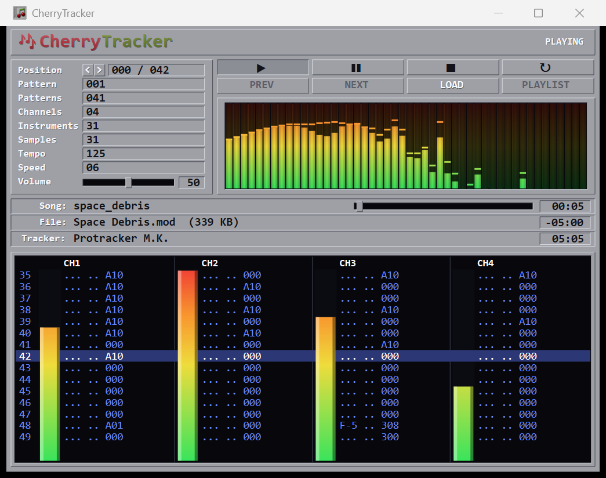

A retro Amiga-style music module player — spectrum analyzer, neon VU meters and a scrolling pattern view.
Plays MOD XM S3M IT & more · self-contained · no install
Source & build instructions on GitHub. The Windows build is a single self-contained executable — no DLLs, no installer. New here? Grab some sample modules to play right away.

A faithful tracker UI, drawn entirely with Red's vector Draw dialect — crisp at any size.
A real frequency display — 48 log-spaced Goertzel bands (55 Hz–12 kHz) over the Hann-windowed output, colour-by-height bars with slow-falling peak caps.
Smooth green→yellow→orange→red gradient bars with fast-attack / slow-decay ballistics and palette-style side bezels.
Row gutter, blue PT-style note / instrument / effect columns, a centred highlighted row, and up to 64 channels.
Play / pause / stop / loop, position spinners, a seek slider and a master volume — every control live.
A snapshot FIFO keyed on bytes-played surfaces exactly the frame you can hear — the meters and pattern never lead the sound.
Name, file & size, tracker type, channels, patterns, instruments, samples, tempo, speed and elapsed / remaining / total time.
One compiled Red program — Red/View for the UI, embedded Red/System for the FFI to libxmp and SDL3.
ProTracker and beyond — drop a module in or pass it on the command line.
No modules on hand? Browse the bundled mods/ folder for a few classic tracks to spin.
libxmp decodes the module, SDL3 plays the PCM, and the whole retro UI is the Red Draw dialect — a zero-allocation render loop so the GC stays idle at 60 fps.
; build the release (static, self-contained) redc.exe -r -s -t Windows -o CherryTracker.exe player.red ; or just run it CherryTracker.exe path\to\song.mod
Standing on the shoulders of great open-source work.
UI inspired by FlodPro (Christian Corti's Flod core, ProTracker interface by Photon Storm) · test modules courtesy of The Mod Archive.